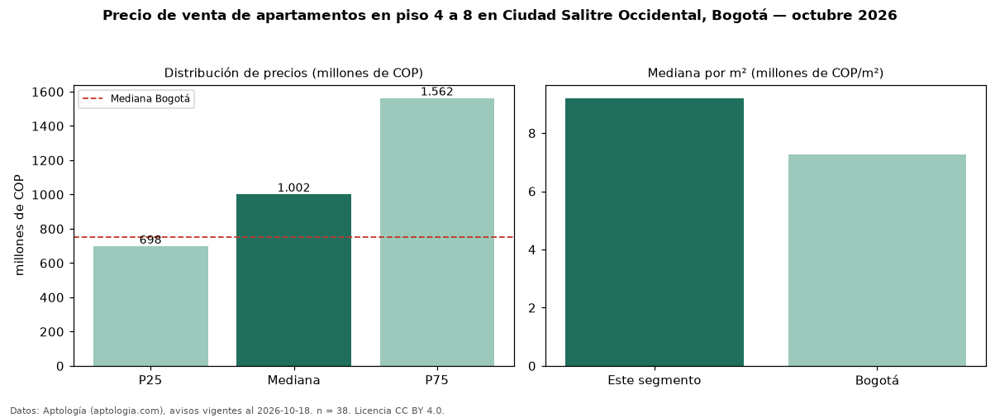

Precio de venta de apartamentos en piso 4 a 8 en Ciudad Salitre Occidental, Bogotá — octubre 2026
En Ciudad Salitre Occidental (localidad de Fontibón), Bogotá, la mediana de precio de venta de apartamentos en piso 4 a 8 es COP 1,00 mil millones, según 38 avisos vigentes. Frente a la mediana de todos los apartamentos en venta de Ciudad Salitre Occidental (COP 1,08 mil millones, n = 84), queda 7 % por debajo; este segmento reúne el 45 % de esos avisos. Por metro cuadrado, la mediana es COP 9,20 millones/m² (n = 37), 7 % por debajo del conjunto de referencia (COP 9,85 millones/m²). El área mediana anunciada es 94 m². El segmento con más oferta es el de 3 o más habitaciones (35 avisos, mediana COP 1,10 mil millones). La administración mediana declarada es COP 585.000 al mes (n = 38). La mitad central de los avisos va de COP 698 millones a COP 1,56 mil millones (razón 2,2), una dispersión alta. El estrato más frecuente es 4 (53 % de los avisos con estrato). Datos: Aptología (aptologia.com), CC BY 4.0 — https://www.aptologia.com/venta/bogota/ciudad-salitre-occidental. Archivos: PDF, CSV con las cifras y gráfica PNG.

| Avisos únicos | 38 |
|---|---|
| Percentil 25 | COP 697.500.000 |
| Mediana | COP 1.001.500.000 |
| Percentil 75 | COP 1.562.500.000 |
| Mediana por m² | COP 9.200.000 |
Fuente: avisos vigentes de portales inmobiliarios recopilados por Aptología, deduplicados (mínimo 30 avisos únicos por celda). Precios pedidos, no cerrados. Fecha: 2026-10-18.